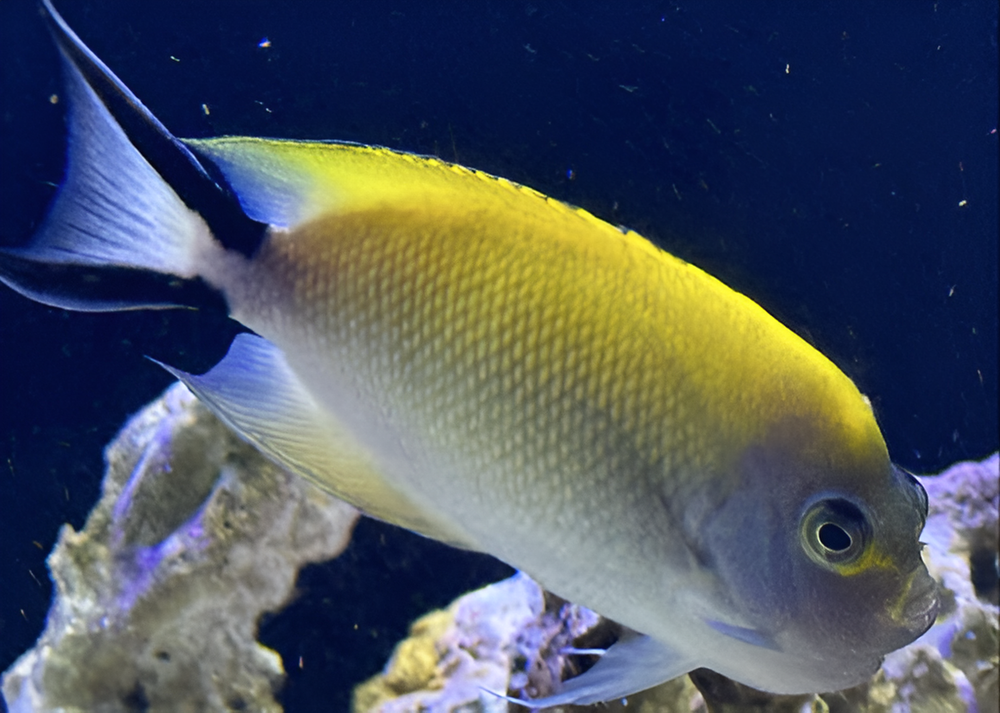
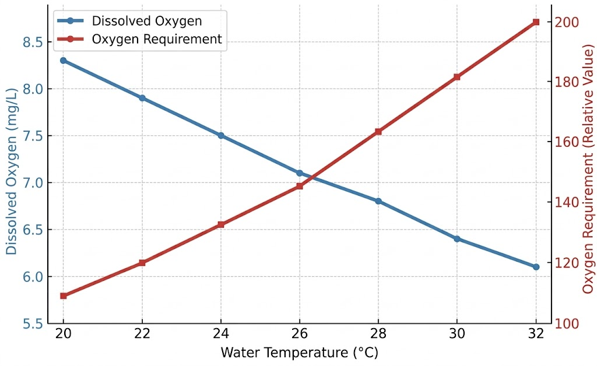
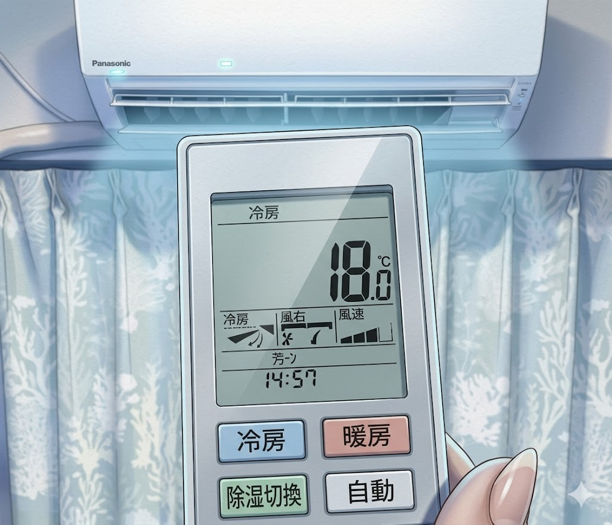

【海水魚の生理】第３回：
海水魚水槽の水温設定について ―長期飼育のために―
Published: 2026.04.07
皆さんは、自宅の海水魚水槽の水温を何度に設定していますか？
我が家では、魚水槽を21℃前後、サンゴ水槽を23℃前後で管理しています。
「えっ、そんなに低いんですか！？」
と驚かれることも多いのですが、私は海水魚の長期飼育を重視するなら、水温は低めのほうが良いと考えています。
理由については、本文で詳しくお話ししていきますね。
高水温が海水魚やサンゴにダメージを与えることは、すでに多くアクアリストの方がご存じだと思います。
そのため、夏場の高温対策として水槽用クーラーを設置している方も多いでしょう。
クーラーやヒーターの故障などで水温が上昇すると、サンゴの白化や溶解、魚が死亡するといった目に見える被害が起きるため、水温管理の重要性は広く知られています。
一方で、魚種ごとの適正水温などについての議論は多くない印象です。
日頃の水槽の設定温度についてもっと語られても良い気がしています。
例えば、仮にある魚の適正水温を21～27℃とした場合、±4℃の例で考えてみましょう。
一時的に水温が下がって1７℃になった場合、代謝の低下などにより活動が鈍ることがあります。ただし、こうした低温による影響は一過性のものであり、水温を元に戻せば回復するケースが多いと感じます。
（個人的な経験では、熱帯性の魚種でも１６℃くらいまでなら、多くの場合が予後問題なく復調すると思います。）
一方で、水温が上昇し31℃になった場合には話が変わってきます。高水温が引き起こすのは、細胞のタンパク質変性や酸欠、脱水といった細胞レベルでの不可逆的ダメージです。これらは臓器障害に発展し、回復が困難になることもあり、最悪の場合は命を落とすことさえあります。
たとえるなら、低体温状態は“冬眠モード”のように回復の余地がありますが、夏の“熱中症モード”では臓器が壊れ、そのまま戻らない──そんな構図だと想像してもらうと分かりやすいかもしれません。
つまり、同じ温度幅でも低水温よりも高水温のほうが、海水魚の飼育には深刻な影響を及ぼす可能性があるということです。
本記事では、そうした高水温による慢性的なダメージにフォーカスし、見落とされがちな問題点を整理していきたいと思います。
１．魚は変温動物である
飼育水温について考えるうえで、まず押さえておきたい大切な前提があります。
それは――魚は変温動物であるということです。
変温動物とは、自分の体温を一定に保つ機能を持たず、体温が環境温度に大きく左右される動物のことを指します。
中でも魚はその特徴が特に顕著で、多くの種が水温と体温がほぼ一致してしまうという性質があります。
すなわち魚飼育において、
水温管理とは“環境管理”ではなく“体温管理”である――という考え方が、何より重要になってきます。

2008年5月お迎えでもうすぐ18年飼育になります
水温が変化すれば体温も変化し、それにともなって代謝・免疫・行動といった生理機能が大きく影響を受けます。そのため、水温は魚の健康状態や寿命に直結する「非常に重要なファクター」だといえるでしょう。
たとえば水温が高めの環境では、体温上昇により魚の活性が上がり、活発に泳ぐようになります。
そのほかにも：
- 餌食いが良くなる
- 成長が早くなる（特に稚魚～幼魚期）
- 免疫活性が上がる
- 繁殖行動が活発になる
といったメリットが見られることもあります。
しかしその一方で、体内では代謝が亢進し、臓器がフル稼働している状態かもしれません。
このような代謝過多の状態が長く続けば、肝臓・腎臓・心臓・消化管などの臓器に慢性的な負担が蓄積されていきます。
特に、免疫系は一時的な活性化ののちに疲弊するリスクがあり、むしろ免疫力が低下してしまうこともあります（Bowden, 2008）。実際に、高水温によってニジマスの白血球数やリゾチーム活性が低下し、免疫力が抑制されることが実験でも確認されています（横塚・石川, 2013）
これが白点病などの感染症の発症や蔓延のきっかけになる場合もあるのです。
こうした直接的な影響に加えて、「代謝亢進 → 消耗 → 老化促進」という慢性的なプロセスも問題です。この流れが進めば、結果的に寿命を縮めてしまう可能性があることも、意識しておく必要があると思います。
近年の魚類を用いた寿命研究でも、高温環境が寿命の短縮や老化の加速につながることが報告されています。例えば、キリフィッシュ（Nothobranchius rachovii）では、高温環境ほど老化関連変化が早く進行することが報告されており（Hsu et al., 2009）、高温環境が生物の「生きるスピード」を加速させる可能性が示唆されています。
つまり高温環境は、魚を単に活発にするだけではなく、生理的な消耗や老化そのものを加速させる可能性があるのです。
目の前の魚が元気に活発に見えると、つい軽視されがちですが、こうしたダメージはすぐに表れるとは限らず、数週間～数か月、あるいは数年後に“突然死”のような形で現れることもあります。
このように、高水温には一時的なメリットもある一方で、見えない“代償”が大きいことも多いのです。
次章では、高水温環境が魚に与える弊害について、さらに詳しく見ていきます。
２．高水温で起きる不具合
■ 溶存酸素量と酸素要求量
水温が上がると、水中に溶け込める酸素の量（溶存酸素）は減り、
一方で魚の代謝が活発になって酸素の消費量は増えます。
つまり「供給は減り、需要は増える」矛盾した状態が生まれ、酸欠になりやすくなります。
酸素不足が続くと、呼吸器や循環器に負荷がかかり、肝臓・腎臓・免疫機能にも影響が出やすくなります。低酸素が免疫力を低下させることは魚類でも報告されています（Choi et al., 2007）。

■ 酸化ストレス
水温が高くなると魚の代謝が活発になり、それに伴って体内で生成される活性酸素（ROS）も増加します。
活性酸素は、細菌などと戦う免疫の働きにも関与する大切な物質ですが、量が増えすぎると自分の細胞を傷つけてしまうことがあります。
魚の体内では、SODやGPxといった抗酸化酵素が、こうした活性酸素の処理を担っています。
しかし、高水温が続くと処理能力が追いつかなくなり、細胞の損傷や老化の加速といった深部のダメージにつながる可能性もあります（Chowdhury & Saikia, 2020）。
■ 病原体の増殖速度
水中の病原体（細菌や寄生虫など）は、水温が高くなるほど活性が上がり、増殖や感染のスピードも加速します。
たとえば、ネオベネデニア属（ハダムシ）のような寄生虫も水温上昇とともに感染力が強まり、特に28〜30℃付近でふ化・寄生のスピードがピークになることが分かっています（Hirazawa et al., 2010）。
またビブリオ属細菌（Vibrio spp.）も温度上昇とともに増殖しやすくなり、特に28℃前後から急激に増殖しやすくなる傾向が知られています。皮膚炎や腹水症、潰瘍などを引き起こす危険性が高まります（Sheikh et al., 2022）。
こうした病原体にとって増えやすい水温帯に魚を長く置くことは、それだけで感染リスクを大きく引き上げる要因になってしまうのです。
■ 免疫細胞の機能維持
魚の免疫系もまた、一般的に水温が上がると、好中球やマクロファージなどの免疫細胞の働きは一時的に活発になります。しかし、適温を超えるとその活性は持続できず、逆に疲弊して免疫力が低下するといった“二相性の応答”が見られることが知られています（Chowdhury & Saikia, 2020）。
さらに、高水温ではストレスホルモンであるコルチゾルの分泌も増加します。このコルチゾルには免疫を抑える作用があり、リンパ球の減少、抗体の産生低下、マクロファージ機能の低下などが引き起こされる可能性があります（Bowden, 2008）。
■ 体色に与える影響
魚の体色をつくるクロマトフォア（色素胞）は、温度の変化に影響を受けやすいとされます。特に、黒を呈するメラノフォアや、黄色を呈するキサントフォアは、高水温によるストレスで機能が乱れたり、色素分布が変化して体色がぼやける可能性があります。
また、赤や黄の発色に関わるカロテノイド（アスタキサンチンなど）は、主に肝臓で代謝・蓄積されますが、肝機能が高水温による負荷で弱まると、色素の保持や利用がうまくいかず、体表の色が褪せてくる可能性があります。
ここまで挙げた項目は、いずれも単体では目立った異常が出にくいものばかりですが、複数が同時に、しかも長期間にわたって魚の体に負担をかけることで、ホメオスタシス（恒常性）の破綻やホルモンバランスのかく乱などを招き、結果として体調不良や突然死につながるリスクも高まります。
だからこそ、水温管理は「魚の体調管理」のひとつだと私は考えています。

大型水槽４本なので
水槽用クーラーを使うより電気代も抑えられて合理的だと思います。
実際、私はこれらを総合的に踏まえたうえで、私が飼育している魚種の適正温度の範囲内である21℃前後に設定し、水温を低めに保つことで管理するようになりました。
３．まとめ
ここまで見てきたように、魚は変温動物であるため、水温の影響を非常に強く受けます。
とくに高水温環境では、さまざまな生理機能に無理が生じやすく、魚にとって水温は最も重要な環境要因のひとつだということがおわかりいただけたのではないかと思います。
では、海水魚にとって「高水温」とは何度を指すのか──この問いに明確な答えを出すのは難しいです。
というのも、魚種によって本来の生息海域の水温が異なり、それぞれが何百万年、何千万年という進化の過程を経て、その環境に適応してきているからです。
つまり、“その魚種にとっての適温”は、種ごとの歴史に根ざした非常に深いものであり、人間の都合でそうそう簡単に変えられません。
たとえば、深場を生息地とするヤッコ・チョウチョウウオやハナダイの仲間などを、浅場向けのリーフタンクで飼育する場合は、注意が必要です。
リーフタンクの設定温度がミドリイシなどのサンゴにとっては好適であっても、深場の魚にとっては、すでに適応の限界を超えた「高水温環境」となっている可能性もあります。
「すぐ慣れますよ」といった声を耳にすることがありますが、
こうした言葉を鵜呑みにせず、魚の出身環境を思い出して慎重に判断したいところです。前章のような不具合（代謝過多、酸素不足、酸化ストレス、免疫疲弊など）をもろに魚が背負うことになり、短命になる可能性が高くなるからです。
私たちがどのような環境を与えるかによって、その魚の寿命や健康が大きく左右されるということを、改めて意識していきたいと思います。
水温は魚の体調や寿命に直結する大きな要素です。
私にとっては餌と同じくらい大切だと感じてきた水温管理について、
今一度、考えを整理したいと思い、今回筆をとりました。
アクアリウム界では、魚に対しての適正水温について語られる機会はあまり多くないように感じています。
何故でしょうか？
この記事が、少しでも水温について深く考えるきっかけになれば嬉しく思います。
他のコラムも読んでみませんか？
＼ 記事が良かったらポチッと！ ／